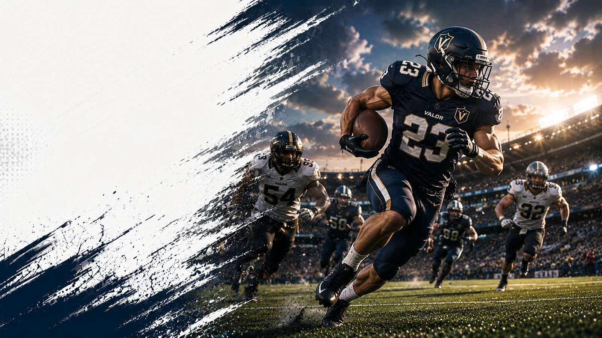

COLLEGE FOOTBALL 2026関東学生 TOP8・BIG8

EVERY DOWN. EVERY GAME.
一球に、
すべてを。
仲間の勝利も、ライバルの一戦も。
大学アメフトの熱を、ここから。
2 カテゴリ18 チーム2026 SEASON
01 / MATCH CENTER
試合の熱を、追いかけよう。
最新の掲載結果
次のキックオフ
情報更新：2026-10-10。連盟公表データを掲載しています。ライブ速報ではありません。
02 / THE LEAGUES
あなたのリーグは、ここに。
KANTO COLLEGE FOOTBALL
TOP8
8チーム · 2026 SEASON
日程・順位・チームを見る ↗KANTO COLLEGE FOOTBALLBIG8
10チーム · 2026 SEASON
日程・順位・チームを見る ↗掲載対象は関東学生TOP8・BIG8です。ブロック名・年度は各表で確認できます。
03 / FOOTBALL DATABASE
あの対戦を、もう一度。
年度・リーグ・大学から試合結果と順位表を探す。
過去の記録を調べる →04 / JOURNAL
アメフトを、もっと深く。
ポジション別 2026-10-09
アメフトWRのルートランニング基礎｜リリース・ステム・ブレイクの練習法
アメフトのWR（ワイドレシーバー）に必要なルートランニングの基礎を、リリース・ステム・ブレイクの3段階とルートの種類から整理。関東TOP8・BIG8でWRを目指す部員が練習で意識したい視点をまとめました。
マネージャー 2026-10-07
アメフト アナライザー（AS）の仕事｜分析担当の役割と向き不向き
アメフト部のアナライザー（アナライジングスタッフ／AS）は何をする役割なのか。スカウティング・ゲームマネジメントなどの仕事内容、マネージャー・トレーナーとの違い、未経験から入る前に確認したい点を、関東TOP8の公式情報などをもとに整理します。
ポジション別 2026-10-06
アメフトDLのパスラッシュ技術｜スイム・リップ・スタンツの基本
アメフトのディフェンスライン(DL)が使うパスラッシュの基本を、役割・ブロッカーのかわし方(スイム・リップ・スピン)・スタンツ・安全面の注意という4つの視点から公開情報をもとに整理しました。関東TOP8・BIG8でDLを目指す部員向けです。